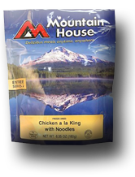
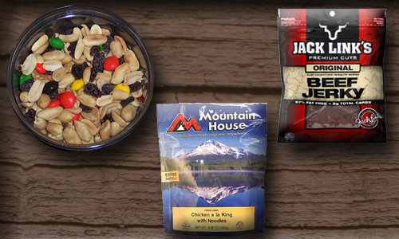
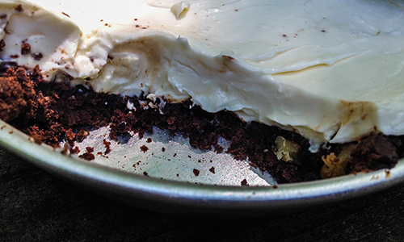

They say the way to a man's heart is through his stomach. I say the way to shake off the stress of the day-to-day grind is dining with Mother Nature. Disconnecting from the "Real World" can be both relaxing and rewarding. A simple day hike and a lunch beside a mountain stream can be all it takes to find peace. But why stop there? Sleeping under the stars and dining by the fire can provide an even deeper, longer lasting reboot from reality.
misconceptions
For people new to overnight backpacking there is a misconception related to food.
Many people believe that you are forced to live off things like G.O.R.P, beef jerky & freeze dried meals.
While these are staples in the backpacking community and can be quite delicious, you are not confined to these alone.
Hover over the images for more information.


The Truth
While you may not have the luxury of a full kitchen and pantry to prepare your meals,
with a little planning and preparation you can dine like wilderness royalty.
Don't think about what you can't do, think about what you can do and how to do it.
Hover over the image for this yummy recipe.

Meal planning
With a little planning the sky is the limit.
Answer these three simple questions and you will be well on your way to a successful outdoor adventure.
These are simple questions. But they will inspire you to think about the whole of the dining experience.
Hover over the questions for more information.
- How long is your trip?
- How will you cook your meal?
- What is you access to fresh water?
the basics
Regardless of the location & duration of a hike there are certain basics you will need.
Having these essentail camp kitchen items on hand provides you the flexibility needed to prepare any meal no matter how simple or complex.
Hover over the image for more information.

Breakfast
Breakfast can be kept simple with something like oatmeal.
However, consider stepping up the most important meal of the day with some of these great ideas.
Hover over the image for more information.
Lunch
Midday activites shouldn't mean grabbing some jerky or a granola bar.
Having a delicious lunch in the field can provide the fuel you need to go that extra mile.
Hover over the image for more information.

Dinner
At the end of a long day on the trail you want to refuel your body.
While the world of freeze dried meals has come a long way, consider tossing the sodium laden bag of rocks for something more flavorful.
Hover over the image for more information.
Dessert
We've all enjoyed the delicousness that is a s'more, but it doesn't have to stop there! Thinking outside the box can take your game to the next level!
Hover over the image for more information.

Plan Around Activities
Typically a backpacking trip involves more activities than just eating so plan your meals around your activities.
At the top of your list should be "Having Fun"!
Take The Quiz
By now you're tummy is grumbling for some yummy outdoor grub & you've picked up some info along the way. Let's see what you've learned!